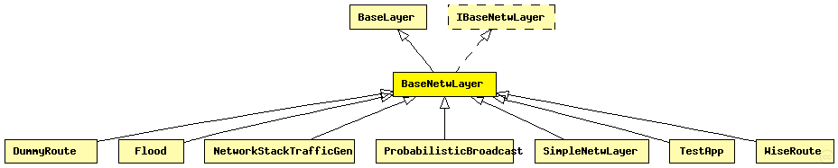

This documentation is released under the Creative Commons license
This documentation is released under the Creative Commons licenseBase module for every network layer module
The following diagram shows usage relationships between types. Unresolved types are missing from the diagram. Click here to see the full picture.
The following diagram shows inheritance relationships for this type. Unresolved types are missing from the diagram. Click here to see the full picture.
| Name | Type | Description |
|---|---|---|
| BaseLayer | simple module |
Base module for all layer modules. Defines the in and out gates |
| Name | Type | Description |
|---|---|---|
| DummyRoute | simple module |
Placeholder module that simply "translates" netwControlInfo to macControlInfo. |
| Flood | simple module |
A simple flooding protocol for network-level broadcast. |
| NetworkStackTrafficGen | simple module |
TODO auto-generated module |
| ProbabilisticBroadcast | simple module |
Multi-hop ad-hoc data dissemination protocol based on probabilistic broadcast. |
| SimpleNetwLayer | simple module | (no description) |
| TestApp | simple module | (no description) |
| WiseRoute | simple module |
Wiseroute is a simple loop-free routing algorithm that builds a routing tree from a central network point, designed for sensor networks and convergecast traffic. |
| Name | Type | Default value | Description |
|---|---|---|---|
| notAffectedByHostState | bool | false | |
| coreDebug | bool | false |
debug switch for core framework |
| stats | bool | false |
stats switch |
| headerLength | int |
length of the network packet header (in bits) |
| Name | Value | Description |
|---|---|---|
| class | BaseNetwLayer |
| Name | Direction | Size | Description |
|---|---|---|---|
| upperLayerIn | input |
from upper layer |
|
| upperLayerOut | output |
to uppe layer |
|
| upperControlIn | input |
control from upper layer |
|
| upperControlOut | output |
control to upper layer |
|
| lowerLayerIn | input |
from lower layer |
|
| lowerLayerOut | output |
to lower layer |
|
| lowerControlIn | input |
control from lower layer |
|
| lowerControlOut | output |
control to lower layer |
// Base module for every network layer module simple BaseNetwLayer extends BaseLayer like IBaseNetwLayer { parameters: @class(BaseNetwLayer); bool coreDebug = default(false); // debug switch for core framework bool stats = default(false); // stats switch int headerLength @unit(bit); // length of the network packet header (in bits) }
This documentation is released under the Creative Commons license